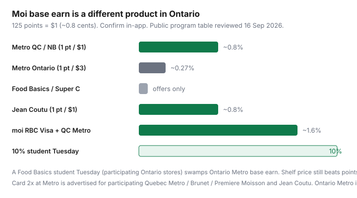

Food & Groceries · Canada
Moi Rewards explained: Ontario vs Quebec earn rates and when Metro beats discount banners
Ontario Metro shoppers hear Quebec’s “1 point per dollar” and feel underwhelmed at the till. Quebec shoppers treat a predictable 0.8% as wallpaper and still overpay versus Super C. Both are looking at the wrong number. Moi is the only big grocery program in Canada with a published base earn — and that earn is a different product by province and by banner.
This guide is the provincial split, Food Basics and Super C, the moi RBC Visa, Jean Coutu as a burn path, and why a 10% student Tuesday usually beats Ontario points. Map it to the store you already use. Do not drive to a prettier Metro for a hobby.
Disclosure: The moi RBC Visa, other RBC cards you might link, and cashback portals are offer types. Saving Optimizer may earn a commission if we later add partner links. We do not currently claim issuer or Metro partnerships. Confirm earn tables on programmemoi.ca and rbcroyalbank.com before you apply. Pay the statement in full.
Key takeaways
- Metro Quebec / New Brunswick-style earn: 1 Moi point per $1 (~0.8%). Metro Ontario: 1 point per $3 (~0.27%).
- Food Basics and Super C: offers and redemption more than base earn. Cheaper shelves still win.
- Jean Coutu pays 1 point per $1 in ON, QC, and NB — a pharmacy earn/burn path.
- moi RBC Visa is no-fee; extra 2x at Metro is advertised for participating Quebec grocery banners and Jean Coutu, not as a magic Ontario Metro 1.6%.
- Student 10% at participating Food Basics Tuesdays and select Metro days swamps Ontario base points. Confirm your store.
How Moi differs from offer-only programs
PC Optimum and Scene+ are mostly weekly and personalized offers on groceries. Skip the Sunday load and you earn close to nothing. That is why the weekly system budgets three minutes for the app.
Moi pays a base rate on eligible pre-tax spend when you scan at participating banners, plus bonus offers. You still load offers — they are how Ontario shoppers make the program less sad — but you are not starting from zero at Metro. Redemption is simple: 500 points = $4, then 125 points ≈ $1 (~0.8¢ a point), with no theatrical bonus calendar required. The three-program map is in PC Optimum vs Scene+ vs Moi.
1 point/$1 (QC/NB) vs 1 point/$3 (ON Metro)
Metro’s public accumulation table (programmemoi.ca, reviewed 16 Sep 2026) is unusually clear:
- Metro Quebec: 1 point per dollar spent, plus promotional bonuses.
- Metro Ontario: 1 point per $3 spent, plus promotional bonuses.
- Jean Coutu in Quebec, Ontario, and New Brunswick: 1 point per dollar.
- Brunet and Première Moisson (Quebec): 1 point per dollar.
- Minimum 500 points to redeem. Points are calculated before tax on eligible items.
Worked example (labelled): $210 eligible at Metro. Quebec ≈ 210 points ≈ $1.68. Ontario ≈ 70 points ≈ $0.56. Offers can beat both. A 12% higher shelf versus Food Basics cannot be closed by 56 cents.

| Place | Public base earn | Approx. return |
|---|---|---|
| Metro QC | 1 pt / $1 | ~0.8% |
| Metro ON | 1 pt / $3 | ~0.27% |
| Jean Coutu (ON/QC/NB) | 1 pt / $1 | ~0.8% |
| Food Basics / Super C | Bonus offers when applicable | Treat as ~0% unless an offer is loaded |
Ottawa–Gatineau shoppers: the till follows the banner’s province, not your postal code. Read the receipt. New Brunswick grocery is not a full Metro empire in the same way; Jean Coutu is the reliable Moi earn there.
Food Basics and Super C: what you do and don’t earn
Food Basics (Ontario) and Super C (Quebec) are Metro’s discounters. The accumulation table lists them as bonus points during promotional offers, not 1-per-dollar. You can typically redeem Moi there. You should not shop Super C expecting Quebec Metro’s 0.8% on oats.
That is the correct hierarchy: shelf first. If Food Basics is $18 cheaper on the same list, Ontario Moi at Metro is a rounding error. Use the discount rotation before you “optimize” 0.27%.
moi RBC Visa and linked RBC card boosts
The moi RBC Visa is a no-annual-fee Visa. Public issuer pages (reviewed 16 Sep 2026) describe:
- 1 Moi point per $1 on purchases everywhere the card is used (card earn).
- An extra point per $1 — 2x total — on qualifying spend at participating Metro, Brunet, and Première Moisson in Quebec and participating Jean Coutu when you also swipe the Moi membership card.
- 2x on dining, gas, and EV charging.
- Super C: card’s 1 point per $1, not the extra Metro point. Offers still matter.
Quebec Metro + membership swipe + moi RBC Visa is the clean 1.6% story (2 points × 0.8¢). Ontario Metro shoppers still have the slower membership base; do not paste the Quebec 2x footnote onto an Etobicoke till. Linked RBC debit or credit cards have also been marketed as extra Moi on eligible spend (historically 1 point per $2 in launch materials). Those promos expire — read the current Moi–RBC linking offer, including any welcome-point end dates.
Gift cards, lottery, tobacco, many pharmacy items, and taxes are typical exclusions. Never carry a balance for 0.8%.
Jean Coutu pharmacy redemption path
Jean Coutu is the quiet Moi superpower: 1 point per $1 in all three provinces, and a place to burn points on toothpaste instead of waiting for a grocery bonus event. If you already fill prescriptions or buy pharmacy brands there, scan Moi every time. It will not fix a Metro-priced grocery cart. It will make the program feel less like Ontario charity.
When Food Basics shelf prices still win despite weaker points
Run a 20-item staple list twice a year: oats, milk, eggs, chicken, canned tomatoes, yogurt, bananas, rice, coffee, toilet paper. If Food Basics or No Frills is 10–15% lower, Moi cannot close it. Shop the discounter, redeem Moi when you happen to be at Metro or Jean Coutu, and stop treating points as a store-choice algorithm. The rule stands: cheaper shelves beat richer points.
Student Tuesday discounts + Moi stacking notes
Food Basics advertises a student discount day every Tuesday at participating Ontario locations: typically 10% off eligible in-store groceries with valid post-secondary ID, one transaction per student per day. Public terms exclude gift cards, beer, lottery, Western Union, transit tickets, stamps, tobacco, and prescriptions, and say the offer cannot be combined with any other offer. Confirm your store on foodbasics.ca/student-discount — not every location participates, and hours vary.
Metro Ontario’s student program is also 10% at select stores on select days (some Tuesday-only, some more often). Metro’s FAQ states you can earn and redeem Moi with the student discount at participating Metro stores, and that the 10% cannot be combined with other offers except Moi Rewards. Digital student ID is accepted in Metro’s public copy.
Hierarchy for students: participating Tuesday 10% > discounter shelf > Ontario Moi base earn. Load Moi offers anyway. Do not skip Food Basics to “farm” 0.27% at Metro.
Card choice for Metro-family households sits in grocery cards by banner and the pay-in-full stacks in maximum grocery rewards.
Sources & date stamps
- Programme Moi, “Points Accumulation Rate and Redemption Conversion by Participating Banner” (programmemoi.ca/en/program-terms/accumulation, reviewed 16 Sep 2026).
- RBC, moi RBC Visa product page and benefits guide (reviewed 16 Sep 2026) for 2x footnotes and Super C treatment.
- Food Basics student discount page and Metro Ontario student-discount FAQ (10% terms, Moi stacking, exclusions).
- Ratehub / MoneySense Moi explainers (2026) for the 0.8¢ point value used in our loyalty comparison.
Frequently asked questions
Does Moi earn the same in Ontario and Quebec?
No. Metro’s public accumulation table (reviewed 16 Sep 2026) lists 1 point per $1 at Metro in Quebec versus 1 point per $3 at Metro in Ontario. New Brunswick Jean Coutu follows the richer 1 point per $1 pattern. Always confirm in the Moi app.
Do I earn Moi on every dollar at Food Basics?
Generally no. Food Basics (Ontario) and Super C (Quebec) are described as promotional or bonus-offer earn, not the Metro base rate. You can still redeem points there. Shelf prices at Food Basics often beat Metro’s richer Ontario points.
Can I stack the student discount with Moi?
Metro’s student-discount FAQ says the 10% student offer can be combined with Moi Rewards at participating stores. Food Basics Tuesday terms are stricter (one transaction per student per day; cannot be combined with any other offer except as the banner states). Show ID and scan Moi; confirm at your store.
Is the moi RBC Visa worth it in Ontario?
It is a no-fee Visa that earns Moi on everyday spend. The advertised extra 2x at Metro is written around participating Quebec Metro / Brunet / Première Moisson and Jean Coutu. Ontario Metro’s slower membership earn still applies to the in-store swipe. Do not migrate a No Frills shop to Metro for the card.
How many points do I need to redeem?
500 points = $4, then 125 points = $1. That is about 0.8 cents a point. Ontario Metro base earn at 1 point per $3 is roughly 0.27% before offers.